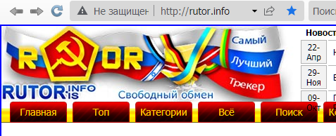

- Тип настройки: браузерное расширение
- Тип проблемы: не работают конкретные сайты
- Что с сайтами: ошибки в браузере
- Используемый браузер: 360 Extreme Explorer v13.0.2310.0 (Chromium 86) на Windows Server 2003 SP2
Описание проблемы
В китайском браузере 360 Extreme Explorer v13.0.2310.0 (Chromium 86) с установленным расширением “Обход блокировок Рунета” не открываются ни Рутрекер, ни NNM-Club:


При этом Кинозал открывается исправно:

Операционная система Windows Server 2003 SP2 (серверная ОС на базе Windows XP). Кузбасский провайдер Goodline в городе Белово (Кемеровская область). Корневые сертификаты обновлены.
Исправлено.
Рутрекер и NNM-Club опять не открываются в браузере Mozilla Firefox 98.0 с PAC-скриптом Антизапрета:


Админы Антизапрета, вы когда-нибудь почините раз и навсегда доступ к Рутрекеру и ННМ-Клубу или впредь так будет всегда?
Рутрекер поплыл походу
С доступом к Рутрекеру через PAC-скрипт Антизапрета всегда практически одна и та же проблема. Сегодня Рутрекер перестает открываться через Антизапрет, а после моего обращения на форум Антизапрета проблема исправляется. Завтра Рутрекер опять перестает открываться через Антизапрет, и после моего обращения на форум Антизапрета проблема опять исправляется. Но послезавтра Рутрекер опять перестает открываться, и так бесконечно:

ValdikSS, неужели Вы до сих пор ничего не можете сделать с Рутрекером?
да это что-то с браузерами происходит,
антизапрет походу нормально отрабатывает
у меня на edge такая же ерунда регулярно, поэтому если не открывается – кидаю ссылку в firefox, и всё открывается
хз что там где в настройках крутить
Через Антизапрет опять не работает ни один из трех официальных доменов Рутрекера (включая https://rutracker.org, https://rutracker.net и https://rutracker.nl):


ValdikSS, пожалуйста, сделайте что-нибудь с бесперебойным доступом к Рутрекеру.
Сегодня тоже перестали открываться Рутрекер и NNM, а другие сайты нормально работают. Через другие средства обхода Рутрекер и NNM нормально открываются.
Ни с одного браузера не заходится на эти-же сайты с 11.06.2023.
Только через чистый браузер TOR. Провайдер МГТС.
Антизапрет настроен на роутере. Пишет подключён, выдал локальный dns. но рутрекер и ntc не открывает.
Так если АнтиЗапрет настроен на Роутере, то без всяких браузерных расширений должно работать, нет?
У меня такая проблемка: На Slimjet (Chromium 109.0.5414.74) все пашет отлично, а на IE (11.0.9600.17843 последний под win7) PAC файл не работает - на всех запрещенных заглушка.
Его можно как-то починить? (нужен именно IE, ибо от него много прог берут настройки прокси).
Проблем не вижу, PAC-файл работает под IE 8 и 11.
IE не поддерживают шифрование прокси, возможно, ваш провайдер блокирует доступ к сайтам через прокси, а вы воспринимаете это как неработоспособность PAC-файла?
Чуть подробнее, может поможет в решении…
С этим pac заглушка

{kind=link}
То же самое с этим
С актуальным сначала про сертификаты
{kind=link}
потом заглушка
На Slimjet все норм

И такое на 2-х компах, стоящих в разных квартирах, провайдер один.
Что-то с этим можно сделать?
Используйте VPN или современные браузеры.
К сожалению, не вариант. Есть самописанные проги, использующие контрол WebBrowser (IE). Переписать их под Awesomium, xulrunner или что-то подобное современное нет возможности.
Не знаю, как у вас, но у меня была похожая ситуация. Правда, с VPN и браузером от Яндекса. На всех других браузерах все работало, а в Яндексе нет и все тут(так же проблемы с сертификатом а потом заглушка).
Решение было простое: нужно в самом браузере убрать галочку “Использовать безопасный DNS-сервер”.(использовался DNS сервер от провайдера). После все заработало. Так же поставил рекомендуемые адреса DNS серверов в свойствах сетевого адаптера.